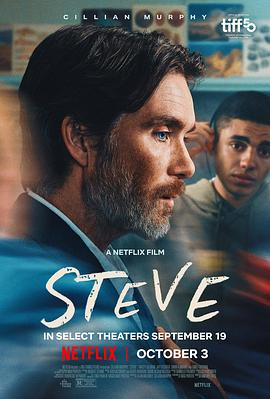

6.2
史蒂夫
Steve
2025
英国
评分 6.2
导演:
蒂姆·米兰特斯
演员:
基里安·墨菲 / 杰伊·利库戈 / 崔茜·尤玛 / 小西姆兹 / 艾米丽·沃森 / 罗杰·阿拉姆 / 鲁比·阿什伯恩·瑟金斯
类型:
剧情
剧情简介
1990年代中期，史蒂夫（基里安·墨菲 饰）担任一所英国专门收治行为问题青少年的寄宿学校的校长。学校坐落在一片荒弃的庄园中，墙壁斑驳、水声回荡，似乎每一步都在提醒他这不是按部就班的课堂。学生夏伊（杰伊·利库戈 饰）是校内最棘手的一员——他声称“安静”是一种选择，却开始在夜晚撕扯墙壁海报。他的暴力冲动如波浪骤起，而史蒂夫则必须在秩序与混乱之间维系一丝平衡。一天里，他从清晨的班级早会、到午后突如其来的拳击赛、再到深夜宿舍里的逃跑事件，每一场戏都让他更清楚自己的崩溃正一步步逼近。镜头贴近他检查摄像头监控、倾听学生嘲笑、看见昔日自己在镜中揪紧领带的影子。影片并非传统励志片，而是对“沉默与救赎”的反思。当学校面临关闭，预算被削减，史蒂夫不会选择激昂宣言，而是在办公室深吸一口气。夏伊在夜色下低语：“你能救我吗？”而史蒂夫轻声回应：“我在尽力。”这部影片用平静却沉重的节奏，把“修复”设定为日常里最难承受的任务。观众不会只看到校长转变的瞬间，更会看见他在不断的失控中，始终握紧希望那根线。